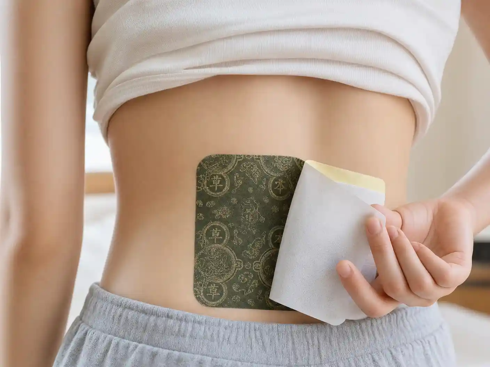

▲ 長期腰痠背痛困擾著無數台灣中老年人，許多人以為「貼貼布就好」，卻不知這樣做反而延誤了調理時機。（示意圖）
你是否也有這樣的經驗：腰痠了，貼一片；膝蓋痛了，貼一片；肩頸僵硬，再貼一片。貼了又撕，撕了又貼，痛了幾年、貼了幾年，卻始終沒有真正好過？
根據台灣藥品市場調查，台灣人每年消耗的痠痛貼布超過 4 億片，平均每位成年人一年貼掉近 20 片。然而，骨骼與關節問題的就診人次，卻逐年攀升，不減反增。

彭溫雅 醫師
國立陽明交通大學 傳統醫藥研究所 助理教授
溫亞中醫診所 院長
「中醫看關節炎與痠痛，歸屬於『痹證』、『骨痹』的範圍。問題的根本，在於肝腎不足、精血虧損，加上長期感受風寒濕邪入侵，導致氣滯血瘀。只貼涼感貼布，只能暫時麻痺神經，寒濕之邪仍在體內，痛症自然反覆發作。」
你一直在犯的 3 個止痛錯誤
彭溫雅醫師在診間接診了無數長期痠痛患者，她發現，九成以上的人都在重複同樣的錯誤。這些錯誤，正是讓你的痛症永遠好不了的真正原因。
只貼「痛的地方」，沒找到真正的痛源
腰痛不一定源自腰部，可能是臀部梨狀肌緊繃、骨盆歪斜所致。膝蓋痛，根源往往在髖關節或大腿筋膜。貼錯位置，等於白貼。中醫強調「循經取穴」，必須找到對應的穴位與經絡，才能真正疏通。
用「涼感貼布」處理「寒性痛症」，越貼越寒
台灣中老年人最常見的是「寒濕型」痠痛——下雨天加重、受涼後發作、熱敷後舒緩。這類痛症的本質是寒邪入侵、氣血不通。涼感貼布含薄荷、冰片等寒涼成分，等於用冰塊敷凍傷，雪上加霜。
治標不治本，沒有深層滲透的「調理」概念
市售貼布的有效成分，大多只能滲透至皮下 2–3 毫米，無法到達深層肌肉、筋膜與關節腔。真正的調理，需要能深層滲透、拔除寒濕、活血通絡的草本配方，才能從根本改善痛症體質。

▲ 正確的貼法與穴位選擇，是決定膏藥貼效果的關鍵。（示意圖）
深層寒濕，才是痛症的真正元兇
彭溫雅醫師解釋，台灣氣候潮濕，加上許多人長期吹冷氣、喝冰飲，導致寒濕之邪極易積聚於關節、筋骨之間。這些寒濕日積月累，阻礙氣血運行，形成「痹阻」，就是中醫所說的「不通則痛」。
「很多患者問我，為什麼每次天氣變化就痛起來？」彭醫師說，「因為寒濕在體內，遇到外在的濕冷氣候，就像磁鐵相吸，痛症自然加重。這不是老化，這是寒濕體質的警訊。」
🌿 200年古法傳承，藏藥非遺的深層調理解方

藏藥非遺透骨膏貼
源自西藏200年古法傳承 · 藏藥非物質文化遺產配方
- 獨家「藏藥溫經拔濕」複方，有效成分深層滲透至肌肉、筋膜與關節腔
- 精選藏區高原草本藥材，不含化學止痛劑，溫和不傷皮膚
- 一盒10貼，多部位適用——腰腿痛、肩周不適、頸椎不適，哪痛貼哪
- 透氣親膚材質，適合台灣潮濕氣候，長效貼附不脫落
- 加入 Line 即獲：專屬調理師一對一穴位貼法指導
一眼看清楚：為什麼不一樣？
| 比較項目 | ❌ 傳統市售貼布 | ✅ 藏藥非遺透骨膏貼 |
|---|---|---|
| 滲透深度 | 僅達皮下 2–3mm | 深達肌肉、筋膜與關節層 |
| 成分性質 | 化學止痛劑（涼感/熱感） | 藏藥非遺草本複方，溫經活血拔濕 |
| 適合體質 | 不分體質，一律涼感 | 200年古法，針對寒濕痹痛體質 |
| 皮膚刺激 | 容易過敏、起水泡、紅腫 | 親膚透氣，敏感肌亦適用 |
| 專業指導 | 自己亂貼，效果不穩定 | 加 Line 即獲專屬穴位調理方案 |
真實用戶見證
我膝蓋痛了八年，西醫說要換人工關節，我不敢開刀。試過各種貼布、吃過各種保健品，都沒用。後來加了他們的 Line，調理師問了我很多問題，說我是典型的「寒濕型膝痛」，推薦我用藏藥非遺膏貼，教我貼在委中穴和陰陵泉穴。第三天，我就覺得膝蓋不那麼卡了。現在每天早上可以去公園走路了，真的感謝！
做工地的，腰是職業傷害。以前每天都要貼一片涼感貼布，貼了五年，腰還是一樣痛。加了 Line 之後，調理師說我貼的位置完全貼錯了，而且涼感貼布對我這種寒性腰痛根本沒用。換了藏藥非遺膏貼，按照調理師說的穴位貼法，一個禮拜後，早上起床不再需要扶牆站起來了。
我女兒幫我加的 Line。調理師問了我的生活習慣，說我長期吹冷氣、喝冰飲，寒氣都積在肩頸了。教我用藏藥非遺膏貼貼在大椎穴和肩井穴，還叫我睡覺時不要對著冷氣吹。兩個禮拜後，頭不再那麼昏，肩膀也輕鬆多了。真的很感謝有這樣的服務，不用出門就有人指導。
網友留言（共 284 則）